| 阿川イチロヲの １時間で英語ギライでも英語をやりたくなる！ 目からウロコのQ&A | |
| 阿川 イチロヲ | |
| (2013) | |
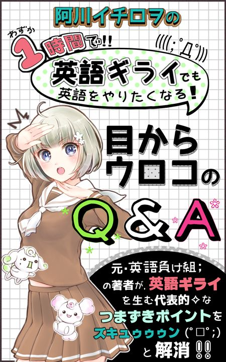
「英語は好きじゃない。 ・・・でも、気になる。」
「英語が苦手。 ・・・でも！ やらざるを得ないっ！！」
この本は、そんな人たちに贈る１冊です。
実は、かつてのボクもまさにそんな１人でした。
いまでこそ英語を教えることを仕事にしていて、２０万部を超えるロングセラーの参考書まで書いていますが、中学の時点で英語はすでに平均点割れ。
それも、別に有名私立中学校での話なんかではなくて、ごく普通の田舎の公立中学校で、です。
要は、バリバリ文句なしの「英語負け組」だったのです。
それがいったいどうして現在のような「英語で飯を食う人間」になったかというと・・・
きっかけは、大学２年の時でした。
中学の時点で英語負け組、高校中退も経験したボクですが、なんとか運よく大学に入れたんです。
それで、大学２年のころに、調子に乗って大胆にも家庭教師のアルバイトを始めてみたところ・・・なんと大学２年にして初めて、自分が Do you ～？ と Are you ～？ の使い分けの基準すらよく分かっていないという事実を思い知らされたのです！！
さすがにこれには自分でもびっくりしました！
思いっきり中学１年レベルの内容なのに、それすらあやふやな自分。。
ショックと焦りで、汗がだらだら。。。
「ここでいきなりクビになったら、いくらなんでもカッコ悪すぎる！」
「なにより、自分として中学１年レベルすらあやふやなんて屈辱すぎる！」
そう思ったのがきっかけで、独学でゼロから少しずつ英語をやり直し始めました。
・・・すると、もうやればやるほど、
「こんな説明の仕方をするから分かりにくいんだな」
「こう考えればもっとすっきりするんじゃないの？」
と感じる部分が、本当にもうた～くさん出てきたんです。
それで、そういった部分を大事に工夫を重ねながら英語を教え続けているうちに、いつの間にか英語を教えることが本業になっていました。
この本は、そんなボクのこれまでの経験をもとに
「英語は好きじゃない。 ・・・でも、気になる。」
「英語が苦手。 ・・・でも！ やらざるを得ないっ！！」
という、かつての自分のような人たちに向けて書いたものです。
目指すのは、そんな人たちの英語に対する心理的なハードルを下げること。 そして、「英語をやってみようかな？」「やり直したら分かるようになるかも！」と思ってもらえるようにすることです。
ですから、扱っている内容の多くは特に苦手意識が無い人たちにとっては「何をいまさら？」という当たり前のことかもしれません。
でも、そんな感じで一般的には「言うまでもない」「当たり前」とスルーされがちだからこそ、英語が好きじゃない人や苦手な人にとってはずっと「わからないまま」「スッキリしないまま」になっている、まさに代表的な「つまずきポイント」だらけというわけ。
ちなみにボクがこれまでに教えてきた生徒は本当に様々ですが・・・
偏差値３０以下、中３の時点でアルファベットすらあやふやだった生徒たちも、感動！
３０年以上英語に目を背けてきて「be動詞って何？」という社会人さんたちも感動！！
その一方で、
大手予備校の模試で偏差値７０以上、難関大学を目指す生徒たちも、感動！！！
海外留学を経験し、大学入学前にTOEIC８００点を超えた生徒ですら、感動！！！！
そんなあらゆるレベルの生徒を感動させている守備範囲の広さがちょっと自慢です。
この度この本を手に取ってくださったみなさんにも、同じように気に入っていただけることを心から願っています。
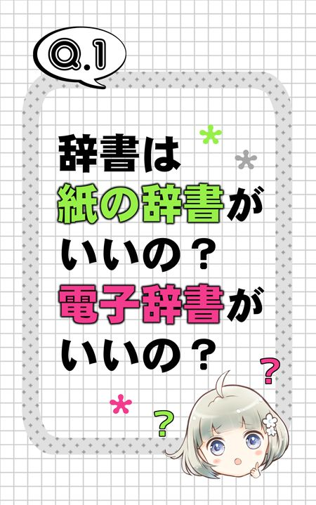
A. 迷っているのなら、絶対に電子辞書を使いましょう！ いまの時代、あえて紙の辞書を使う理由が見当たりません。電子辞書はなるべく能率的に英語力を向上させる上での必須アイテムです。
紙の辞書と比べた場合の、電子辞書の主なメリットは次のとおり。
>> 軽くて持ち運びが簡単！
>> すぐに引ける＆すぐに音声を確認できる！！
>> 履歴機能や単語から他の単語、辞書から他の辞書へのジャンプ機能などで、圧倒的な時間節約効果！！！
紙の辞書は重いしかさばるし引くのも面倒という人が多いと思いますが、電子辞書なら気軽に「辞書でも引いてみようかな？」って気になれます。
そして、何より以上のようなお手軽さから、使っていてストレスがたまりにくく集中の妨げにならないところが素晴らしい。
結果的に学習効率が格段に上がります！
自分で「能率がいいな」と実感できると、ますますやる気が出てきてさらに能率が上がるという良い循環が生まれます。
もう、使えば使うほど良さが実感できます。
紙だとなかなかわかりにくい発音も、その場ですぐにネイティブの音声で確認できるので、この点も記憶をサポートしてくれます！
world（世界）や novel（小説）などカタカナ化している基本的な単語でも音声を確認するよう心がけることで、実際の音とのギャップに気づけて思い込みを修正することができます。
英語をやってみようかな？ と思った人で、まだ電子辞書を持っていない人がいたら、いますぐ買いに行きましょう！
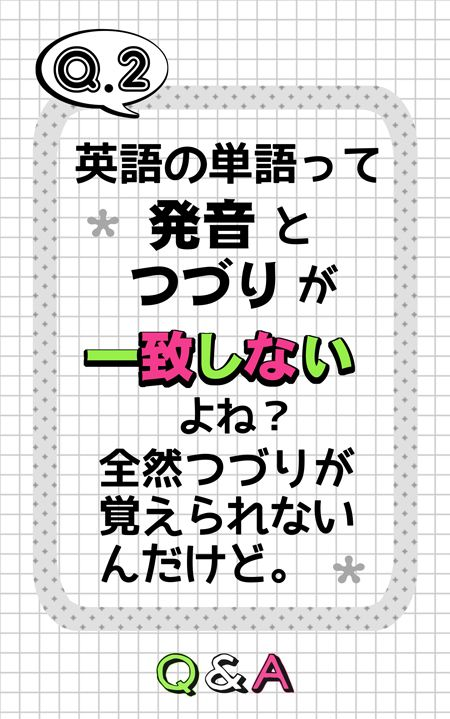
A. たしかに日本語と比べれば一致していませんが、それなりにルールがあります。
ただそのルールがちょっとややこしいのが難点。また初歩的な単語の中にはルールに反するような例外がいくつかあるため、最初なかなかルールがつかみにくいんです。
というわけで、つづりがなかなか覚えられない人に役立つポイントをいくつかあげておきますね。
まず、つづりが覚えられない人の傾向として a（あ）、i（い）、u（う）、e（え）、o（お）、ka（か）、ki（き）、ku（く）、ke（け）ko（こ）といったローマ字の悪影響で、特に母音の発音でつまずいている人が多いです。
＊ いわゆるローマ字は日本語の音をアルファベット（＝ abcd ... といった文字）で（無理やり）表したものであって、英語ではありません。
ローマ字とは違って、英単語の中に出てくる母音（＝ a、i、u、e、o といった文字）には、ものによって次のように２通り以上の読み方があるのが基本です。
● a なら「ェア」のような音で読むものと、「エイ」のようにアルファベットを順番どおりに ABCDE ... と読むときの読み方で発音するものなどがある。
>> 「ェア」のような音タイプは apple や hand、bag など
>> 「エイ」のような音タイプは April や lake など
● i なら短く「イ」（と「エ」）に近い音で読む場合と、「アイ」のようにアルファベットを順番どおりに ABCDE ... と読むときの読み方で発音するものがある。
>> 「イ」のような音タイプは it や will など
>> 「アイ」のような音タイプは item や like など
● 特に u の発音には要注意！ 日本語の「ウ」に近い音で読むものはほとんどなくて、短く「ア」のような音で読むか、「ユー」と読むのが基本！
>> 「ア」のような音タイプは under や uncle、bus など
>> 「ユー」のような音タイプは use や cute など
● e なら「エ」のような音で読むものと、「イー」と読むものがある。
>> 「エ」のような音タイプは egg や tennis など
>> 「イー」のような音タイプは see や secret など
この辺りって、あまり意識したことが無かったという人が多いんじゃないでしょうか？
他にも次のような原則があります。
● use や cute、bike、hope、plane のように、後ろが「母音＋子音（＝ a、i、u、e、o 以外の音）＋ e」という組み合わせで終わる単語は、最後の e を発音しない。また子音の前の母音は、アルファベットを順番どおりに ABCDE ... と読むときの読み方で発音する。
>> use なら u を「ユー」と発音して「ユーズ」、bike なら i を「アイ」と発音して「バイク」という感じ
＊ live や come、have のような例外もあります。
● tea や great などのように、母音が２個連続する場合、どちらか一方を ABCDE ... と順番に読むときの読み方で発音するものが多い。
>> eat なら e の方を「イー」のように発音して「イート」、great なら a の方を「エイ」のように発音して「グレイト」、see ならどちらも e だからもちろん「イー」と発音して「スィー」という感じ
>> wait なら a を「エイ」のように発音して「ウェイト」という感じ。
>> road なら o を「オウ」のように発音して「ロウド」という感じ
● oo は「ウー」と伸ばすか、短く「ウ」のような発音で、ou なら「アウ」か「オー」が基本。
>> room や moon なら「ウー」で「ルーム」「ムーン」、book や foot なら「ウ」で「ブック」「フット」という感じ
>> out なら「アウ」で「アウト」、bought なら「オー」で「ボート」といった感じです。
● er、ir、ur は、実は全部同じ発音で「アー」のような音（ものによっては or も）。つまり teacher の「アー」と、bird や girl、shirt の「アー」、church の「アー」などは同じ音ということ（work の「アー」も同じ音）！
特に ir を「アー」のように発音するというのを意識できてない人って多いと思うので気を付けて！
＊ この「アー」のような音は日本語の「アー」とはかなり違う音ですが、ボクが複数のアメリカ人とカナダ人に確認した限りでは、上と下の歯を合わせた状態で「アー」と言った場合の音と比較的近い響きと思うと良いでしょう。
・・・とまあこんな感じで、英単語のつづりと発音のあいだにはちゃんとそれなりのルールがあるんです。 ただそのルールが少々複雑で慣れが必要ってことですね。
とはいえ、いまご紹介したいくつかを頭に入れておくだけでもずっととつづりが覚えやすくなるはずです！
その他、発音に関しては、関正生先生の「世界一わかりやすい英語の発音の授業」などがオススメです。
つづりと発音のルールを学んでさらに自分自身の発音を鍛えたいという方はぜひボクのホームページ（http://www.ichiro-wo.net/）に掲載しているパソコンソフトなど、オススメ教材を試してみてください。
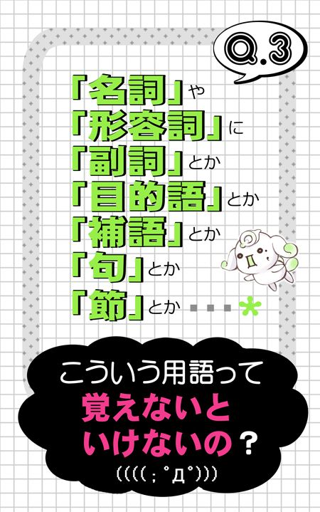
A. これはものによりけりです。 まず、最低限覚えないことには話が始まらない「超基本の用語」というのがいくつかあります。
その他に、絶対とは言わないけど覚えておくと都合が良いものや、ボク個人としては「使う必要が無いし、そもそもその用語のせいでかえって英語全体が分かりにくくなる」と感じる迷惑な用語もあります。
ここでは、英語をやるならとりあえず絶対覚えておいて欲しい一番大事な「超基本の用語」を確認しておきましょう。
● 「名詞」「動詞」「形容詞」など
rice（お米）、eat（食べる）、big（大きい）などのような「単語」の特徴を示す「グループ名」のこと
>> 「名詞」とは book（本）、tennis（テニス）など「もの（の名前）」を表す語
>> 「動詞」とは eat（食べる）、speak（話す）など「動き」を表す語
>> 「形容詞」とは cute（かわいい）、small（小さい）など「ものの様子」を表す語
単語のグループにはこの他にも、I や he のような「代名詞」や、a や the のような「冠詞」と呼ばれるグループなど、いくつかグループがあります。
また、この「分類すると『動詞』『名詞』『形容詞』などのうち、どのグループか？」という「単語の分類（についての考え方）」のことを「品詞」と呼びます。
＊ もし「この単語の品詞は何か？」と聞かれたら、「この単語をグループ分けするなら、動詞や形容詞などのどれか？」と聞かれているのと同じことと思ってください。
● 「主語」「目的語」「補語」など
「名詞」や「動詞」などを組み合わせて「私は ～で ...する。」のような「文」を作った場合に、それぞれの「単語」が「文の中でどういう立場や働きなのか」を示す呼び名のこと。
>> 「主語」とは「話の主人公・動作をする人やもの」
＊ 日本語にすると「...は／が」という表現がぴったりなことが多い。「主語」になるのは基本的に「名詞」。
「主語」がどういうものかという点は、絶対に覚えておいてください！でも、次の「目的語」「補語」という用語については、とりあえずスルーしてもらってもOKです。
>> 「目的語」とは、eat natto（納豆を食べる）の natto や、drink water（水を飲む）の water のように、動詞の後ろに直接そのまま続き「～を／に」といった意味にあたる語。
＊ 「目的語」になるのは基本的に「名詞」。ただし、たとえ意味が「～を／に」となる「名詞」でも、go to school の school のように、前置詞という語（＝ in や to など）の後ろに続く語は、ふつう「目的語」とは呼ばない。
>> 「補語」とは、基本的にbe動詞とばれる語（＝ is、am、are）の後ろに続く語のこと
＊ 日本語にすると「～は ...（だ）。」の「...（だ）」の部分にあてはまる語といえ、形容詞や名詞など、いろんな語句が「補語」になりうる。
繰り返しますが、「目的語」と「補語」についてはとりあえずスルーでもOKです！
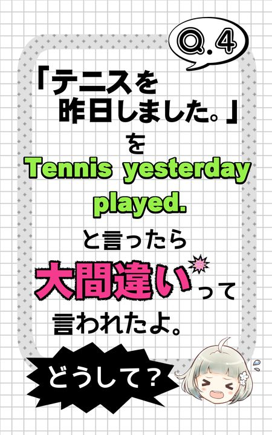
A. ポイントはいくつかありますが、まずは日本語と英語を比べた場合の「主語」に関する大事な違いを確認するところから。
>> 日本語の文は、「話の主人公・動作をする人やもの」で「...は／が」にあたる語、つまり「主語」を省略しても大丈夫！
>> 英語の文は、文の中に必ず「主語」を入れるのが原則で、勝手に省略したらダメ！
この点に注目して、あらためて「テニスを 昨日 しました。」という日本語の文を見てみると・・・「主語」が入っていませんよね？
でも、これを英語にするのならちゃんと「主語」を入れないとダメ！ つまり「テニスをしたのは誰か？」という部分を、補って考えないといけないんです。
実際問題としてこの「主語」が誰かという部分はちょっとびみょーなところですが、常識的に判断すれば「このセリフをしゃべっている人」ってことになるはず。
というわけで、ここでは「私」にあたる I を補いましょう！
とはいえ I tennis yesterday played. としたのではダメ。 正しくは I played tennis yesterday. というカタチです。
この正解を見ると、主語の I を補っただけでなく、そのほかの語が並ぶ順番も変わっているのに気づきましたよね？
ココも大きなポイントです。
実は、英語では、言葉を並べる順番、つまり「語順」がとても大事なんです。
英語の一番基本の語順は、次のような語順と決まってます。
>> 【主語＋動詞（＋その他の語句）】
以上のうち、「その他の語句」の部分にはいろいろな語が来る可能性がありますが、play のような普通の動詞の後ろなら「～を／に」にあたる語を置くのが基本です。
そして、yesterday（昨日）など「時を表す語句」は基本的に文の後ろの方（文末）に置くことが多いです。
よって、「テニスを 昨日 しました。」を英語にした場合の正解は
I played tennis yesterday.
ということになるわけです。
・・・ちなみに「時を表す語句」は文末に置くことが多いといっても、その「時」を強調したい場合や「話の前置き」という感じを出したい場合などには、「主語」よりも前に置くこともできちゃいます。
いまの例なら
Yesterday I played tennis.
というカタチでもOKってことですね。
ぜひ、次の点をしっかり覚えておいてください！
>> 英語では 【主語＋動詞】 が一番基本の語順！
>> 「時を表す語句」は文の後ろの方が基本。だけど「時を表す語句」は「主語」より前（＝文頭）に置くことも可能！
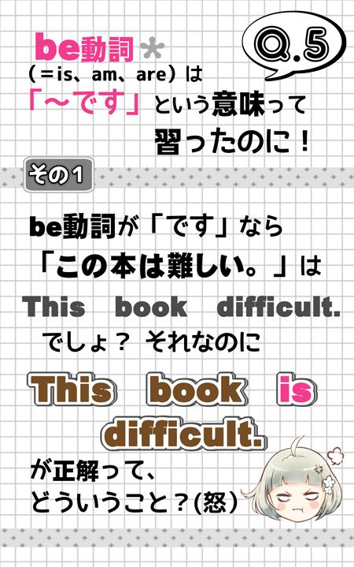
A. これは多くの人が最初につまずく部分ですが、みなさんがつまずくのも無理はありません。
なぜなら、そもそもこの「be動詞」＝「です」という説明が正確ではないから。
「be動詞」＝「です」と思っていたら、分からなくなるのは当然なんです。
・・・それなのに、なぜか中学校の教科書や多くの入門レベルの参考書では「is、am、are などbe動詞は『です』という意味」と説明されているという悲しい現実（実際、いまボクの手元にある２０１２年から使われている中学校の教科書にも、そう明記してあります）。
でも、この本をとったみなさんは、ラッキー（？）です！
ぜひこの機会に「be動詞」＝「です」という説明は、きれいさっぱり忘れましょう！！
これが英語が分かるようになるための第一歩です！！
「じゃあ、結局be動詞って何なの？」というと・・・
>> 「be動詞」とは、文の中に eat（食べる）や speak（話す）のような「普通の動詞」が入らないときに代わりに使うことになっている、一種の記号のようなもの。
全然動きを表してるわけではないけど、「普通の動詞」の代わりに使うということで、建て前上は動詞。だから入れる位置は当然「主語」の後ろ。
「ふーん。」と思ってもらったところで、先ほどのQ４の話を思い出してください。
英語の文といえば、【主語＋動詞】が一番基本の語順って話をしましたよね？
ここから気づくことがありませんか？？
そうです。実は英語の文には「必ず動詞を１個入れる」というルールがあるんです。
それに対して日本語は、文の中に動詞があってもなくてもOK！
だから「私は 納豆を 食べる。」のように動詞が入ることもあれば、「この問題は難しい。」のように動詞が入らないこともあります。
この「英語の文には動詞が必要だけど、日本語の文は動詞があってもなくてもOK」という違いはとっても大事です。
もし「私は 納豆を 食べる。」のように普通に動詞（＝ eat や speak など）が入る内容を英語で表す場合は I eat natto. のように、そのまま単語を置き換える感じでOK。
でも「この問題は 難しい。」のように、日本語だと動詞が入らない内容を英語にする場合には、要注意！！
単に This question difficult. のように単語を置きかえただけではダメ！ ・・・たとえ意味は分かるとしても、ダメ！！
こんなふうに「普通の動詞（＝ eat や speak など）が入らない内容」を英語で表す場合には、必ず代わりにbe動詞という語を入れることになってるんです。
先ほども述べましたが、be動詞というのは、全然動きを表しているわけではない記号のようなものだけど、普通の動詞が入らないときに代わりに使う語だから、「動詞」って名前で呼ぶことになってます。
日本語には、英語のbe動詞にぴったり当てはまる語はありません。
それなのに、無理に「です」という言葉をあてはめて説明しようとするから、つまずく人が出てきてしまうん「です」。まったく迷惑な話「です」よね～？
みなさんは、次の３点をしっかり覚えておいてくださいね！
>> 英語の文には、（「主語」の次に）「必ず動詞を１個入れる」というルールがある！
>> eat や speak などのような普通の動詞が入る内容なら、そのままそれを使うだけでOK。
>> 普通の動詞（＝ eat や speak など）が入らない内容なら、必ず代わりにbe動詞という語を入れる！
ちなみに、建て前上の動詞である「be動詞」に対して、eat や speak のような普通の動詞のことを「一般動詞」と呼びます。
さすがにこの「一般動詞」という名前は知ってる人が多いかもしれないけど、忘れてた人はここでしっかり覚えておいてください！
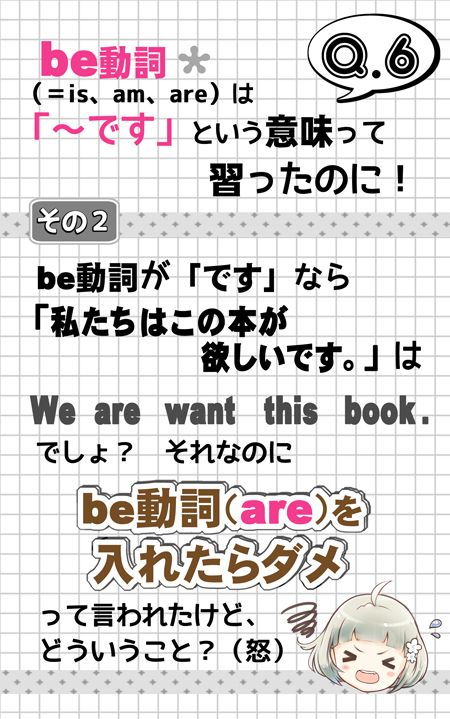
A. この問題は先ほどのQ５の続きになります。 もう答えが分かってしまった人もいるかもしれませんが、ひとつひとつ丁寧に確認していきましょう！
まず大事なのは「be動詞」＝「です」という説明を忘れることでしたよね？
be動詞というのがどんなものか、定義を確認すると、次のとおりでしたよね？
>> 「be動詞」とは、文の中に eat（食べる）や speak（話す）のような「普通の動詞（＝一般動詞）」が入らないときに代わりに使うことになっている、一種の記号のようなもの。
全然動きを表してるわけではないけど、「普通の動詞」の代わりに使うということで、建て前上は動詞。
つまり、「私たちはこの本が欲しいです。」のように日本語で「です」が入るからbe動詞を使うとか、そういう問題じゃないんです。
問題は、内容を考えた場合に eat（食べる）や speak（話す）のような「普通の動詞（＝一般動詞）」が入るのか入らないのか、という部分です。
・・・でも、そうは言っても、この「私たちはこの本が欲しいです。」という日本語の文には、別に「動きをあらわす言葉」は入っていない感じですよね？？
それならやっぱりbe動詞を補った We are want this book. が正解じゃない？ という気がするところですが・・・ここで要注意なのは「欲しい」という意味を表す want という語。
実は、この want って、意味的には動きを表しているわけではないけど、英語の分類上では「一般動詞」ということになってるんです！！
だからこの文にbe動詞（are）を入れる必要はないし、もっと言うと、入れたらダメ。
なぜなら英文には必ず動詞が１個必要だけど、必要なのは原則として１個だけだから。
というわけで「私たちはこの本が欲しいです。」は We want this book. が正解となります。
なお、want 以外で「動きを表しているわけではないけど分類上は一般動詞」ということになっているびみょーなタイプの代表は like（好き）や know（知っている）など。
たったいま上でも述べたとおり、英文には必ず動詞が１個必要だけど、必要なのは１個だけなので、ひとつの文の中に一般動詞とbe動詞を両方入れたら間違い！
・・・なんだけど、この間違いをやっちゃう人って本当に多いです。
中でも特に want や like や know などは意味的に「動きを表す感じがしない」ところから、これらと一緒にbe動詞を使ってしまうという間違いを思わずやってしまう人が後を絶ちません。 とにかく気を付けて！！
なおこの want、like、know などのように「動きを表しているわけではないけど分類上は一般動詞」というものを、特に「状態動詞」と呼ぶことがあります。
それに対して eat や speak などのような「いかにも動詞」という感じの一般動詞を「動作動詞」と呼ぶことがあります。
＊ 一般動詞とbe動詞は全然別ものですが、be動詞は別に動きを表していない、というところから、be動詞のことも状態動詞の一種と考えることがあります。ここは一般動詞とbe動詞という場合の分類基準と、動作動詞と状態動詞という場合の分類基準が違うため、スッキリしないかも。 「スッキリしな～い！」という人は、この話はとりあえず気にしなくても大丈夫です。
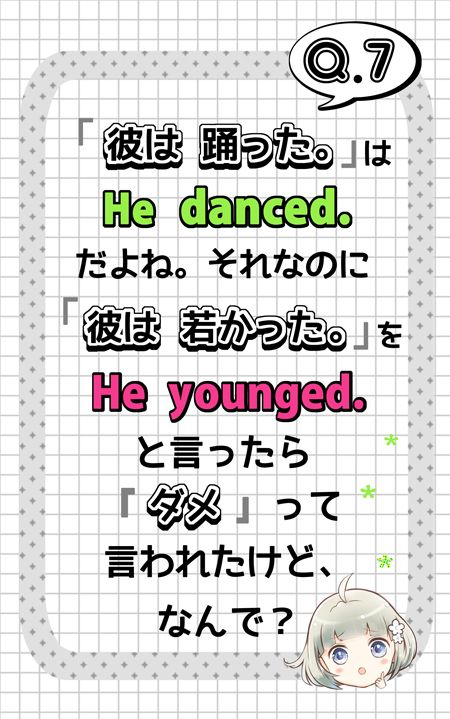
A. まず「若い」という意味の young は「形容詞」というのが大事なところです。
つまり He younged. では「文の中に動詞が無い」ってことになってマズイから、be動詞を補わないといけませんよね？
でも、だからといって He is younged. じゃダメですよ。
なぜなら、英語では「踊った」とか「若かった」とか、「過去の内容を」表す際には「動詞の過去形」を使うというルールがあるから。
というわけで、正解はbe動詞（is）の過去形を使った He was young. となります。
ついでにここでもうひとつ注意点です。
日本語では「若い」に対して「若かった」、「かわいい」に対して「かわいかった」のように、「形容詞」にも「過去形」があります。
・・・でも、英語の形容詞には過去形が無いんです！！ だからそもそも younged のようなカタチが存在しません。
「彼は若かった。」のように、英語だとbe動詞を使う内容で、しかも「過去」の話という場合は was や were のような「be動詞の過去形」を使うだけで、形容詞はそのままのカタチですからねっ。
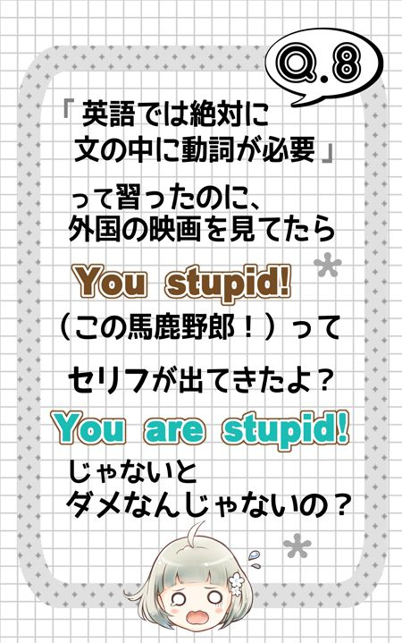
A. まず、stupid が「バカ（な）、愚か（な）」といった意味の「形容詞」というのを確認した上で答えを言うと・・・ You are stupid! と You stupid! のどちらも正解です！！
「はぁっ？？ ナニソレ？？？」
とムカついた人がいたらごめんなさい。。
これまで散々、英語の文には必ず動詞が必要で、一般動詞が入らない場合は必ず代わりにbe動詞を入れないとダメと言っておきながら、本当にごめんなさい。
実は、この You stupid! のように、ごく短いフレーズで、特に感情がこもったような場合などには、例外的にbe動詞を省略することもあるんです。
あとまあ、Good morning.（おはようございます）とか、Large or small？（大きいのと小さいの、どちらにしますか？）のように決まり文句的な表現で、動詞が入らないものも中にはあります。
でも、これらはあくまで例外です。
英語全体で見たら、英語の文には動詞が入る。一般動詞が入らないのなら、be動詞を入れないとダメ。と思っておいてくださいね。
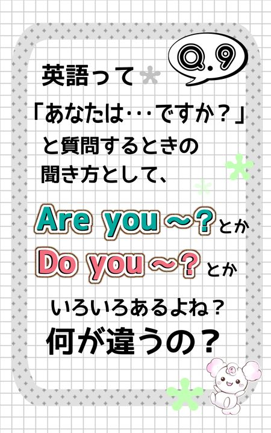
A. 別にそのときの気分しだいでどれを使ってもOK！ ・・・ではありません（笑）
ここまでの話から、もうなんとなくこの Do you ～？ と Are you ～？ の使い分けの基準が分かってしまっている人も多いと思います。
でも、念のため丁寧に確認していきましょう！！
注目してほしいのは、やっぱり動詞です。
これまでに何度も確認したとおり、英語の文には一般動詞とbe動詞のどちらかひとつが入ります。
ここに注目すると、英語の文って大きく「一般動詞を使うタイプ」と「be動詞を使うタイプ」の２つに分けることができると言えますよね？
この「一般動詞タイプ」と「be動詞タイプ」のどちらなのか？ という点で「疑問文」のパターンが決まってるんです。
● 一般動詞タイプの文なら
疑問文は Do you ～？ Does he ～？ のように、文頭（＝主語の前）に do/does/did を置いたカタチ！
● be動詞タイプの文なら
疑問文は Are you ～？ とか Is he ～？ のように、文頭（＝主語の前）にbe動詞を出した（置いた）カタチ！
「疑問文」だけではなく、「～ではない。」と内容を否定する「否定文」の場合も同じ感じです。
● 一般動詞タイプの文なら
否定文は 【主語＋ do/does/did not ＋一般動詞＋...】 のように、主語と一般動詞のあいだに do などと not を入れたカタチで、たいていは don't や doesn't、didn't といった「短縮形」を使う！
● be動詞タイプの文なら
「否定文」は You are not ～ や He is not ～ のように be動詞の後ろに not を置いたカタチで、You aren't や You're not のような短縮形を使うことが多い！
以上からも分かることですが、be動詞タイプの文を「疑問文」や「否定文」にする場合には do/does/did は使いません。
だから、次のようなカタチはあり得ません！！
× Does he is a teacher？
これって、なんとなくわかっているつもりでも、実際には思わずやっちゃう人がとっても多い間違いだから気を付けて！
この他にも、次のような間違いも本当に多いです。 くれぐれも気を付けてくださいね！
× Does he a teacher？
× Is he play tennis？
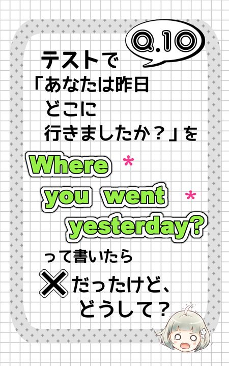
A. これもかなりの人がやってしまう間違いです。 順に確認していきましょう。
まず「どこ？」と場所をたずねる場合には where という語を使いますが、この点は問題ない人も多いはず。
ついでに確認しておくと、where 以外に「何？」なら what、「誰？」なら who、「いつ？」なら when、「なぜ？どうして？」なら why という語を使います。
で、こういう where とか what のような語を、全部まとめて「疑問詞」と呼ぶんですが・・・「疑問詞」を使う際には次の点に注意！
>> 基本的に「疑問詞」は文頭に置く！
>> 疑問詞の後ろは did you go yesterday のような感じで、「（たとえ疑問詞をのけても）疑問文とわかる語順」にするのが原則！！
where や what、why といった「疑問詞」は名前のとおり疑問文で使います。
ここから、文頭にこれらが入るとなんとなくもうそれだけで「疑問文」という感じがしてしまいがち。
そのせいで、思わず Where you went yesterday？ のように、後ろを疑問文の語順にするのを忘れてしまう人が本当に多いんです。
「・・・ドキッ！」
とした人は気を付けてくださいね！
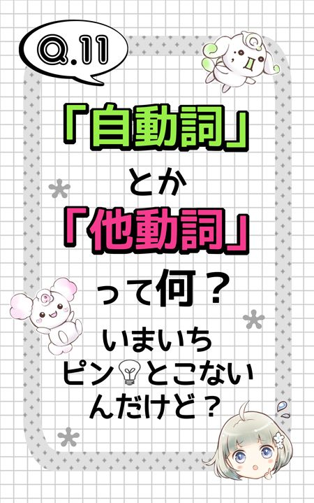
A. この「自動詞」「他動詞」というのは、主に高校以上の英語の授業で使われ始める用語で、中学時代は別に英語が嫌いではなかったという人をも「英語ギライ」にしてしまうことがある「非常に性質の悪い用語」です。
ぶっちゃけ、ボク個人としては「つまずく人を量産するばかりで、使うメリットがほとんどない無駄な用語」と思ってます。
・・・でも、つまずいてしまった人たちにスッキリしてもらうために！ そして「本当に無駄な用語だなぁ」と共感してもらうためにも！！ 解説していこうじゃありませんか！
● 自動詞 ：
一般的には「目的語をとらない動詞」という小難しい言い方をしますが、簡単に言うと、後ろに「前置詞（＝ in、to、at など）」ナシでは名詞を続けられない動詞のこと。
たとえば listen（聞く）や go（行く）、wait（待つ）などがこのタイプで、これらはいずれも後ろに名詞を続けるには前置詞が必要なんです。
例： 音楽を聴く
× listen music
○ listen to music
例： 学校に行く
× go school
○ go to school
例： 私の母親を待つ
× wait my mother
○ wait for my mother
● 他動詞 ：
一般的には「目的語をとる動詞」という小難しい言い方をしますが、簡単に言うと、後ろに「前置詞」ナシで名詞を続けて大丈夫な動詞のことです。
ここまでに出てきた eat natto や play tennis という例のように、大部分の「一般動詞」は後ろに「前置詞」ナシで名詞を続けて大丈夫なタイプ、つまり「他動詞」ってことです。
これで、スッキリ？ でもこれだけならただ「ふーん。」って感じですよね？
この次のQ１２では、この用語が「つまずく人を量産するばかりで、使うメリットがほとんどない無駄な用語」というボクの主張に共感して頂こうと思います！
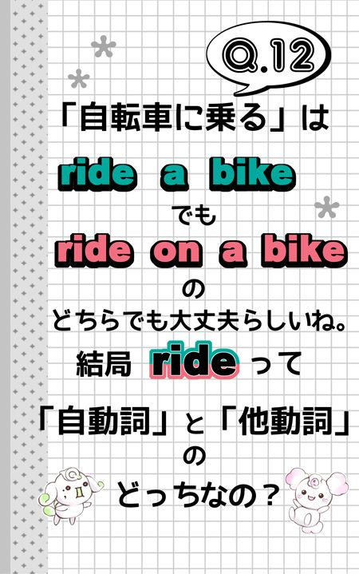
A. この「自転車に乗る」は ride a bike でも ride on a bike のどちらでも大丈夫という点が、「自動詞」「他動詞」という用語の無駄さを物語っています。
この ride のように、実は多くの一般動詞は後ろに直接名詞を続けるカタチと「前置詞」を入れてから名詞を続けるカタチのどちらも可能なんです。
例： そのサルたちは 自転車に 乗る。
○ The monkeys ride a bike.
○ The monkeys ride on a bike.
これはつまり言い換えると、
「多くの動詞は『自動詞』としても『他動詞』としても使える」
ってことです。
そう考えると、わざわざ「自動詞」「他動詞」なんて面倒な呼び名を持ち出して、無理に動詞を分類しようとすることに何の意味があるの？ ただ話がややこしく分かりにくくなるだけって思いませんか？
ついでにさらに理不尽なことに、「自動詞」「他動詞」という分類を考える場合、be動詞も「自動詞」の一種とされます。
・・・これもまったく訳が分からない分類って思いませんか？
そもそも一般動詞とは根本的に性質が違って、ただの記号ともいえるbe動詞を無理やり分類して「自動詞」って。 なんのこっちゃ。
というわけで、サヨウナラ「自動詞」「他動詞」という言葉～。
と終わってしまっても大丈夫なんですが、これだと「自動詞」「他動詞」という用語があまりにかわいそうというか、この分類がほんの少しだけ参考になることもあるので、一応それを紹介しておきましょう。
この「自動詞」「他動詞」という分類が、ほんのちょっとだけど役に立つとき。それは、辞書を引くときです。
辞書で「動詞」を引くと、たいてい「意味」や解説の前に 自、他 か vi、vt という区別が書いてあります。
で、それに応じて次のように考えることができます。
>> 自、vi とあれば「後ろに名詞を続けるには、前置詞が必要」ってこと！
>> 他、vt とあれば「後ろに前置詞ナシで名詞を続けて使う」ってこと！
たとえば attend という動詞の場合、辞書を引くと次のようになってます。
>> 他、vt と書いてあるところで「～に出席する」という意味が書いてある。
>> 自、vi と書いてあるところで「（～の）世話をする」という意味が書いてある。
以上から言えるのは・・・
>> 「～に出席する」という場合は、attend the meeting のようにそのまま後ろに名詞を続けろってこと！
>> 「（～の）世話をする」という場合は、attend children のように後ろに直接名詞を続けるのはダメで、attend to children のように前置詞を入れてから名詞を続けろってこと！
このように、動詞によっては、意味に応じて前置詞が不要・必要という部分がはっきりと決まっているものもあるんです。
以上をふまえ、「自動詞」「他動詞」という分類については、次のように軽く考えてしまうのがオススメです！
「直後に前置詞が必要か不要かをささっと確認する際の目安にはなるが、その程度のものでしかない」
以上。
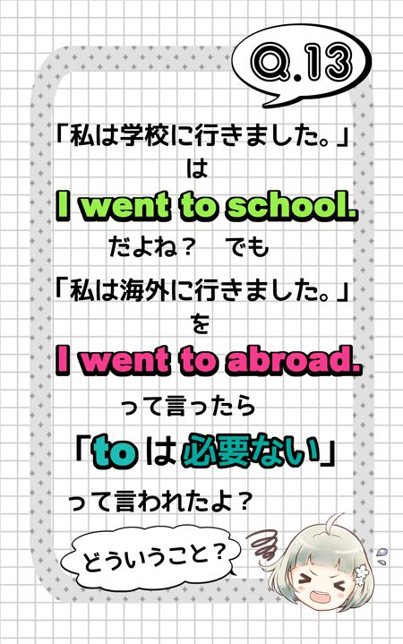
A. これも、非常に多くの人がなんとなくスッキリしないままで済ませてしまっている部分ですね～。
やはり順に確認していきましょう！
まず went が go の過去形というのは大丈夫？ で、go といえば例えば go to school（学校に行く） といった感じで、後ろに名詞を続けるには前置詞の to が必要な動詞でしたよね？
・・・でも、「海外に行く」という感じで「海外（に／へ／で）」という意味の abroad を使う場合は注意！
実は、これらを文に入れる際には、前に前置詞を置かないことになってるんです！
だから go to abroad ではなくて、go abroad が正しいカタチ！！
ポイントは、この abroad という語が、分類すると「名詞」ではなく「副詞」というグループというところです。
「副詞」というと、「どんなものかいまいちピンと来ない」って人が多いですが、この「副詞」というグループの特徴のひとつが「前に前置詞を置かずに、そのまま文におまけ要素として追加する語」というところなんです！
このように、英単語の中には、意味を考えると「場所を表す名詞」のように思えても、実は名詞ではなく「副詞」という扱いの語（＝前に前置詞を置かずにそのまま文に追加する語）が結構あるので、気をつけて！
ちなみに abroad と同じく overseas という語も「海外（に／へ／で）」という意味ですが、これも副詞。
だから「海外に行く」は go overseas でもOKだけど、go to overseas じゃダメですからっ！！
なお、この他に there（そこ に／へ／で）や here（ここ に／へ／で）なども「前置詞ナシでおまけ要素として文に追加する語」、つまり代表的な「副詞」です！
くれぐれも go to there とか come to here とか言わないように気を付けて！
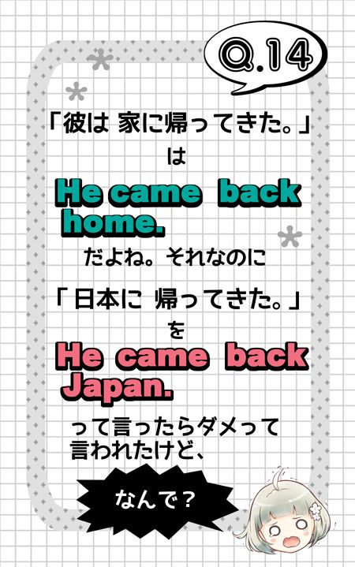
A. これまた非常に多くの人が「ん？」と思ったまま、ずっとスッキリできないでいる部分ですね～。
でもまあ、このQ１４に対する答えって、きっとQ１３の話と関連がありそうって気づいた人もいるんじゃないでしょうか？？
順に確認していきましょう。
まず come と言えば「帰る」という意味ですが、「...に帰る」のように、後ろに名詞を続けたいのなら、前置詞の to を置いて come to ... としないといけないところに注意。
この come を使った表現のひとつに、come back（to 名詞）で「（...に）戻ってくる」という意味を表すカタチがあります。
だから「日本に戻ってくる」なら come back to Japan が正解。
ここで注意してほしいのは、この表現の back は動詞に「元の位置に戻る」といったニュアンスを添える際に後ろに置くことが多い語で、分類すると「副詞」というところ。
つまり、back は前置詞ではないから、come back Japan のような come back 名詞 というカタチにはできないってことです！
後ろに名詞を続けたいのなら、ちゃんと to を補って come back to ... としないとダメ！
でも、それなら「家に帰ってくる」も come back home じゃなくて come back to home が正解じゃないの？
と思った人もきっとたくさんいますよね？
実際、みなさんがそう思うのはごもっともですが、正解はあくまで come back home という to を入れないカタチです。
もう答えが分かりましたか？？？
そうです。 要するに、home という語が「名詞」ではなく「副詞」という扱いなんです。
「ん？？『家』って、どう考えても『名詞』だろ？」
という感じがすると思いますが、ここは割り切ってください。
英語では「家」という意味の home は there や here と同じく「場所を表す副詞」として、前に前置詞を置かずに使うことがとっても多いんです。
これで長年の疑問がスッキリ？？？
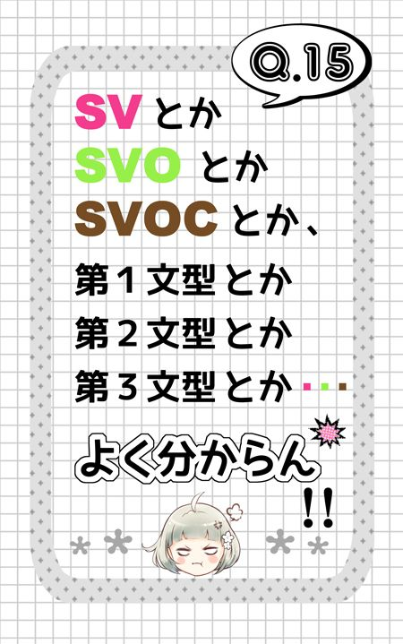
A. ・・・SVOとかSVOCとか「文型」と言えばっ！！ 高校に入学したばかりのみなさんを一瞬で英語ギライに変えてしまう呪いの用語。
ついに本書もこのQ１５でラストですが、ここではそんなラストにふさわしいテーマとして、SVOやSVOCや「文型」についてスッキリしてもらいましょう！！
まず、「文型」の定義について。
ものすご～く簡単にいってしまうと次のとおりです。
>> 文型 ＝ 動詞によって決まる「文のカタチ」のこと
これまでに確認したとおり、英文の一番基本は【主語＋動詞】のカタチ。
そして動詞から後ろの部分にはいったいどんな語句が続くかというと・・・実はこれって基本的に動詞ごとに決まってます。
つまり、「この動詞を使うのなら、これとこれを続けてもいいけど、これはナシ」というふうに、動詞ごとにいくつかのパターンがあるってわけ。
で、この「動詞の後ろに続く語句」には、いったいどれくらいのパターンがあるのか、昔の暇人たち ・・・じゃなくて、偉い人たちが分析した結果・・・
「大ざっぱには５種類の代表パターンがある」って結論にたどりついたらしいんです。
それで、この５パターンのことを「５文型」と呼んでるというわけ。
＊ ちなみに動詞の後ろを５パターンではなく７パターンや８パターンに分けて考える「７文型」や「８文型」という考え方もあります。
さてここで。
「文型」とは文字通り「文のカタチ」のことですが、どんな英文も【主語＋動詞】が一番基本で、「動詞の後ろにどんな語句が続き、どんな意味になるかは動詞しだい」ということは・・・結局、次のように考えて良いってことです！
>> 「文型」＝ 動詞の違いで決まる「文のカタチ（特に動詞から後ろのカタチ）」のこと
これからそんな「文型」について具体的に見て行きましょう！
でもその前にちょっと注意。
「文型」について考える際には、よく次のような記号を使います。
>> 「主語」は S （「主語」を指す subject という語の頭文字）
>> 「動詞」は V （「動詞」を指す verb という語の頭文字）
>> 「目的語」は O （「目的語」を指す object という語の頭文字）
>> 「補語」は C （「補語」を指す complement という語の頭文字）
「・・・この記号がワケが分かんなくて嫌いだっ！」って人も、SとVという記号については、わりと受け入れやすいんじゃないでしょうか？
一方、「目的語(O)」と「補語(C)」については苦手意識がある人だらけと思いますが、いまからちゃんとわかるように説明していくのでご安心ください。
「SVCの文」とか「第２文型の文」というのは、基本的には次のような「be動詞を使う文」のことだと思ってください。
例： Chihiro is cute.
チヒロは かわいい。
例： Her father is a teacher.
彼女の父親は 教師だ。
以上の例のように「be動詞」の後ろには「形容詞」や「名詞」など「一般動詞」以外のいろいろな語句が続きます。で、こういうbe動詞の後ろに続く語句を「補語」と呼び、C という記号で表すことになってるんです。
だから、be動詞を使う文の文型は、記号で表せばSVCということになります。
このSVCの文のことを「第２文型」と呼ぶこともあります。
・・・が、２という数字は昔の偉い人がテキトーに割り当てただけで何の意味も無い数字なので、この「第２文型」という呼び方は忘れてOK！
＊ 文型を５パターンではなく７パターンや８パターンに分けて考える「７文型」や「８文型」という考え方もあるので、その点からもこの「第～文型」という数字をあてはめた呼び方は、使い勝手がよくありません。
なお、be動詞を使う文、つまり SVC の文では、S(主語) と C(補語) の間に「S ＝ C」と言えるような関係が成り立つのが特徴です！
「SVOの文」とか「第３文型の文」というのは、基本的には次のような「一般動詞を使う文のうち、もっとも標準的なカタチの文」のことだと思ってください。
例： We play baseball.
私たちは 野球を します。
例： The monkey rides the bike.
そのサルは 自転車に 乗る。
すでにこれまでにも述べたように、eat（食べる）、ride（乗る）といったほとんどの「一般動詞」の後ろには「...を／に」にあたる「名詞」が、そのまま直接続きます。
そして、上の例の baseball や the bike のように「一般動詞の後ろに直接続く名詞」のことを「目的語」と呼び、Oという記号を使って表すことになっています。
つまり、以上の We play baseball. や The monkey rides the bike. のような文は、記号で表せばSVOの文ということになります。
このSVOの文のことを「第３文型」と呼ぶこともあります。
・・・が、３という数字は昔の偉い人がテキトーに割り当てただけで何の意味も無い数字なので、この「第３文型」という呼び方は忘れてOK！
＊ 文型を５パターンではなく７パターンや８パターンに分けて考える「７文型」や「８文型」という考え方もあるので、その点からもこの「第～文型」という数字をあてはめた呼び方は、使い勝手がよくありません。
「SVの文」とか「第１文型の文」というのは、次のような「一般動詞を使う文のうち、動詞(V)の後ろに、直接は名詞が続かないカタチの文」のことだと思ってください。
例： The monkey rides on the bike.
そのサルは 自転車に 乗る。
この rides on the bike という例の the bike のように、動詞の後ろに「前置詞（＝ on や to など）」が入ってから続く名詞に関しては、たとえ意味的に「～を／に」という感じでも、普通は「目的語(O)」とは呼びません！
そんなわけで、以上の The monkey rides on the bike. のような文は、記号で表せば、SVの文ということになります。
＊ 前置詞の後ろに続く名詞は、〈前置詞＋名詞〉の１セットで「修飾語(M)」と呼ぶこともありますが「文型」がSVかSVOかといった話をする場合には無視するのが基本。
このSVの文のことを「第１文型」と呼ぶこともあります。
・・・が、１という数字は昔の偉い人がテキトーに割り当てただけで何の意味も無い数字なので、この「第１文型」という呼び方は忘れてOK！
「SVOOの文」とか「第４文型の文」というのは、一般動詞を使う文のうち次のようなカタチの文のことです。
例： My father showed me the guitar.
私の父は 私に そのギターを 見せた。
例： I gave the boy a book.
私は その少年に 本を 与えた。
つまり、show や give のような一般動詞の後ろに「人を表す名詞」、「ものを表す名詞」の順に「前置詞」ナシで「名詞」を２個並べ、「『人』に『もの』を...する」という意味を表す文のことです。
このカタチでの「人を表す名詞」と「ものを表す名詞」は、どちらも「一般動詞の後ろに前置詞ナシで続く名詞」なので、どちらも「目的語(O)」と呼びます。
だから、以上の My father showed me the guitar. や I gave the boy a book. のような文は、記号で表せばSVOOの文ってことになるわけです。
このSVOOの文のことを「第４文型」と呼ぶこともあります。
・・・が、４という数字は昔の偉い人がテキトーに割り当てただけで何の意味も無い数字なので、この「第４文型」という呼び方は・・・以下略。
なお、この一般動詞の後ろに「人を表す名詞」、「ものを表す名詞」の順に「前置詞」ナシで「名詞」を２個並べ、「『人』に『もの』を...する」という意味を表すSVOOのカタチは、あくまで特別なカタチという点に注意！
一般動詞の中でもこのSVOOのカタチを作れるのは、show や give など一部のみで、動詞全体からみれば少数派なんです。
ですが、少数派とはいえ使用頻度が高いものが多く、たとえば次のような動詞がSVOOのカタチを作れる動詞の代表です。
● SVOOのカタチを作れる代表的な動詞
>> give（与える）、tell（伝える／道などを教える）、teach（勉強などを教える)、show（見せる／示す）、lend（貸す）、send（送る）、buy（買ってやる）、make（作ってやる） など
ちなみに、次のようには言えないところにも要注意！
× I gave a book the boy.
つまり 「もの」→「人」 という順で、前置詞ナシで名詞を２個並べるカタチはダメってことですね。 ・・・でも、次のようなカタチなら可能です♪
○ I gave a book to the boy.
つまり、動詞の直後に「ものを表す名詞」を置き、次に「前置詞」を入れてから「人を指す名詞」を続けたカタチ。文型でいえば SVO の文型ですね。
＊ 前置詞の後ろに続く名詞は、〈前置詞＋名詞〉の１セットで「修飾語(M)」と呼ぶこともありますが「文型」がSVかSVOかといった話をする場合には無視するのが基本。
この SVO の文型でも、意味は「『人』に『もの』を ...する」で、先ほどの SVOO の文とほぼ同じになります。
同じ「『人』に『もの』を ...する」という意味でも、動詞の直後に「人」なら、前置詞ナシで「もの」を置くSVOOのカタチ。
一方、動詞の直後に「もの」なら、前置詞を入れて「人」を置くSVOのカタチですよ。
「SVOCの文」とか「第５文型の文」というのは、５つの文型の中でも日本人が一番苦手なタイプ（阿川イチロヲ調べ）。
どんなカタチなのか、もうさっさと例を見ちゃいましょう！
例： He made me angry.
彼は 私を 怒った状態に した。 ＝ 彼は 私を怒らせた。
例： I call Hiroshi Hiropon.
私は ヒロシを ヒロポンと 呼んでいる。
どういう文か、なんとなく分かりましたか？
言葉で説明しようとすると少々ややこしい感じになっちゃいますが、次のような感じ。
● SVOCの文とは
動詞の後ろに「...を／に」に当たる「名詞」（＝「目的語(O)」）を置き、さらに後ろにその「名詞」（＝「目的語(O)」）の状態を「補足説明する語句」を続けたカタチ！
で、この「...を／に」にあたる「名詞」（＝「目的語(O)」）を補足説明する語句も「補語(C)」と呼ぶことになっているので、「SVOCの文」というわけ。
・・・といっても、まだ「いまいちピンとこない」って人が多いかも。
なんせ、このSVOCの文は日本人が一番苦手とする「文型」ですからね～。
でも安心してください！ SVOCの文型を作れる動詞は数が少ないんです！！
とりあえずは make、keep、leave、call という４つの動詞と、次の「英語」⇔「日本語」の対応関係を「公式」っぽく覚えてしまえば、大丈夫。
● よく使うSVOCのカタチ
>> make ＋ O ＋ C ⇔ O を C(の状態)に する
>> keep ＋ O ＋ C ⇔ O を C(の状態)に しておく
>> leave ＋ O ＋ C ⇔ O を C(の状態のまま)に しておく
>> call ＋ O ＋ C ⇔ O を C と 呼ぶ
あらためてSVOCの文型の特徴を確認すると、次のとおりです。
>> 日本語にすると「Oを C（の状態）に する」といった感じのものが多く、OとCの間で「O が C だ」「O ＝ C（の状態）」というひとつの文のような関係が成りたつ ！
>> Cとして使う語は「形容詞」が多い！ でも「動詞(V)」に応じて「名詞」やそれ以外の語句を使うこともある ！
>> OとCの間には意味的に大きな区切りがある。・・・が、「名詞」と「形容詞」、あるいは「名詞」と「名詞」がただ連続する感じになるのでOとCの間の区切りがわかりにくくて、慣れが必要！
日本人には「SVOCの文型が苦手」という人がとても多いけど、悲しいことにこのカタチって非常によく使われます。
だから「SVOCの文型を攻略することが、英語を攻略する上でのカギ」とも言えます。
SVOCの文に限らず先ほどのSVOOの文もそうですが、とにかくまずそういう文のカタチ（＝文型）があるってことを、しっかり意識すること。
そして、そんなカタチ（＝文型）を作れる動詞を覚えていくことが大事！！
そう心がけることで、文中でそんな動詞を見かけた場合も、自分で英文を作る場合も、すぐに反応できるようになってきます。
いままで分からなかった文型やSVOCといったものが、なんとな～く分かってもらえたでしょうか？？
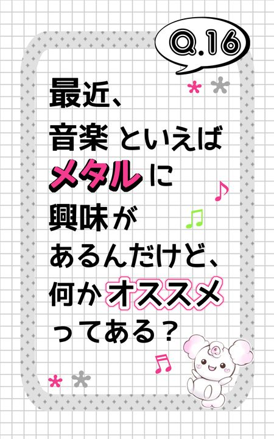
A. それはもうドイツのバンドRAGEで決まりです♪ いますぐ YouTube でチェック！
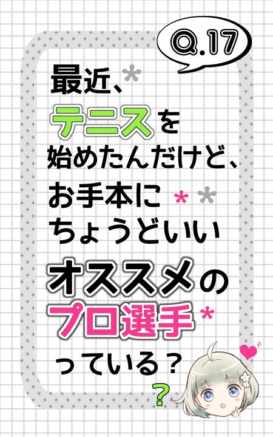
A. YouTube で Fabrice Santoro slow と入れて検索だ！
最後までお付き合いいただきどうもありがとうございました！！
Q１６とQ１７は、「勉強にも遊び心を大切に♪」ってことで、もちろんジョークです（笑）
もし、この本がきっかけで、
「英語って好きじゃなかったけど、案外いけるかも？」
「英語、やってみようかな？」
なんて思ってもらえていたらうれしいです♪
そして、手始めに拙著「阿川イチロヲの２時間で一気につかむ！中学レベル英文法」や「英文法のトリセツ」シリーズなどを手に取っていただけたなら、さらにうれしいです！！
冒頭でも述べましたが、あくまで本書は
「英語は好きじゃない。 ・・・でも、気になる。」
「英語が苦手。 ・・・でも！ やらざるを得ないっ！！」
という、かつてのボクのような人たちに向けて書いたものです。
目指すのは、そんな人たちの英語に対する心理的なハードルを下げること。 そして、「英語をやってみようかな？」「やり直したら分かるようになるかも！」と思ってもらえるようにすることです。
ですから、特に英語に苦手意識が無い人たちにとっては「何をいまさら？」という当たり前のことばかりだったかもしれません。
でも、一般的には「言うまでもない」「当たり前」とスルーされがちだからこそ、英語が好きじゃない人や苦手な人にとってはずっと「わからないまま」「スッキリしないまま」になっている、そんな代表的な「つまずきポイント」なんです。
それを扱っていることに意義があると思っています。
そんな本書のコンセプトを十分ご理解いただいた上で、ぜひ「英語ギライ」だったみなさんからレビューをいただけるのを楽しみにしています！！
それでは！
実は、中学時代からすでに英語は平均点以下、高校中退も経験、進研模試の英語の偏差値は４０前後で赤点５回という「元・英語負け組」。
大学２年の中ごろ始めた家庭教師のアルバイトがきっかけで、自分が Do you ～？ と Are you ～？ の違いすら理解していないという事実に気づき、激しくショックを受ける。
そしてゼロから中学レベルの英語をやり直しはじめる。
大学を出て２年目の終わりごろ、友人の何気ないひと言から「自分の本を出したい！」という野望を抱く。
そこで「とりあえず出版社に話を聞いてもらうには？」と考え、名刺代わりにTOEICで９００点以上取るという目標を設定、本格的に英語の独学を開始。
それから２年余りでTOEICの点数を５００点アップさせ、９２５点を達成。
そのまま語学出版・通信教育の最大手㈱アルクで原稿の採用も決まり、独学開始から３年足らず、２０代で「英文法のトリセツ」シリーズを出版。
「英文法のトリセツ」シリーズは発売直後から「元・英語負け組の視点からの解説がかゆいところに手が届くわかりやすさ」と大評判になり、「じっくり基礎編」の発売から７年で２０万部を突破、いまだに売れ続ける大ヒットロングセラーに。
英語教員向けの専門誌、大修館書店「英語教育」の２００５年１１月号書評でも非常に好意的に取りあげられるなど、専門家からの評価も高い。
２０１３年２月２７日には、Kindle用電子書籍として「阿川イチロヲの ２時間で一気につかむ！ 中学レベル英文法」を出版し、好評を博している。
現在は「阿川イチロヲ英語スクール（http://www.ichiro-wo.net/）」を運営。
小学生や中学生、高校生はもちろん、社会人にまで幅広い対象に英語を教えながら、「常に学習者の目線で、なるべく無駄なく楽に、分かりやすく」をモットーにいまでも「生徒にとってより良い教え方」を追求中。